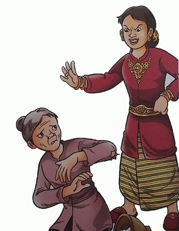
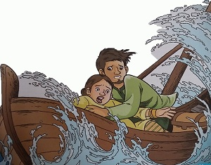

Baitusen dan Mai Lamah
( Cerita Rakyat Kepulauan Riau )
Baitusen dan Mai Lamah adalah sepasang suami-istri miskin yang tinggal di Natuna, Kepulauan Riau. Karena bosan hidup miskin, Baitusen ingin merantau ke pualu Bunguran. Pulau Bunguran yang terkenal dengan kekayaan Iautnya. Mereka berharap bisa mengumpulkan kerang dan ikan untuk dijual. Sesampainya di Pulau Bunguran, Baitusen bekerja sebagai nelayan. Dalam setahun, kehidupan Baitusen dan Mai Lamah berubah drastis. Mereka menjadi orang yang sangat kaya raya. Namun kekayaan mereka membuat perangai Mai Lamah berubah. Mai Lamah tak lagi berkumpul dan mengobrol bersama tetangganya. Pergaulannya dengan para saudagar itu membuatnya lupa diri. 
Suatu hari, mengumumkan kalau Mai Lamah hamil. Semenjak itu, perilaku Mai Lamah bertambah sombong. Ia gemar memamerkan perhiasan emas untuk calon bayinya, hadiah dari para saudagar China dan Singapura. Ketika Mak Semah, tetangganya yang seorang bidan menawarkan diri untuk memeriksa kehamilannya, Mai Lamah malah mencemoohnya. Ia hanya ingin memeriksakan kehamilannya pada tabib dari China. Tibalah saatnya Mai Lamah melahirkan. Siang itu perutnya terasa mulas sekali. Baitusan amat cemas. Lalu Mai Malah menyuruh memanggilkan tabib China di Kapal Saudagar Apeng. Malang bagi mereka, kapal Saudagar Apeng pulang lebih awal dari rencana semula. Baitusen kebingungan. Tiba-tiba ia teringat pada Mak Semah. Tetapi Mak Semah tidak bisa menolongnya karena ia sudah merasa kecew, ia pun menyuruh membawa ke pulau seberang.
Baitusen panik. Ia kembali ke rumah. Ia membujuk istrinya meminta maaf pada Mak Semah,
tapi Mai Malah menolaknya. Lalu Baitusen mengantarakan istrinya ke seberang pulau. Dengan bersusah payah ia membopong istrinya ke perahu. Tiba-tiba Mai Lamah ingat akan peti hartanya. Ia pun menyuruh Baitusen untuk membawanya. Baitusen pun menuruti perintah istrinya. Baitusen mendayung perahunya sekuat tenaga. Perahu itu terasa berat. Apalagi, gelombang di lautan tinggi sekali. Perahu mulai oleng dan tenggelam. Mai Lamah berteriak-teriak melihat peti hartanya tenggelam. Baitusen tak memedulikan hartanya. Baginya, keselamatan istrinya jauh lebih penting. Ia menarik tangan Mai Lamah dan terjun ke laut. Ia berusaha berenang sambil menarik istrinya menuju daratan.
Tapi sayang, Baitusen tak mampu lagi menyelamatkan istrinya. Tiba- tiba petir menyambar-nyambar dan hujan turun sangat deras. Secepat kilat, petir itu menyambar tubuh Mai Lamah. Tubuhnya berubah menjadi batu yang berbadan dua. Batu itu makin lama makin besar, menyerupai sebuah pulau. Demikianlah akhir cerita Mai Lamah yang sombong itu. Pulau berbadan dua itu dikenal dengan nama Pulau Sanua yang berarti "satu tubuh berbadan dua".